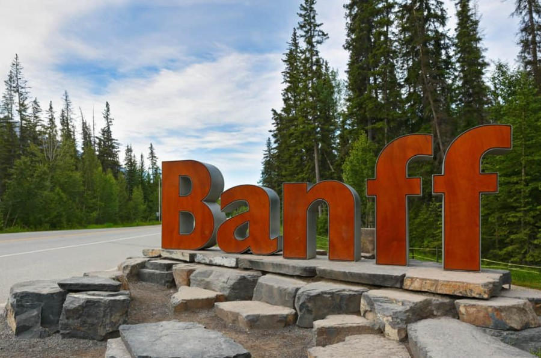
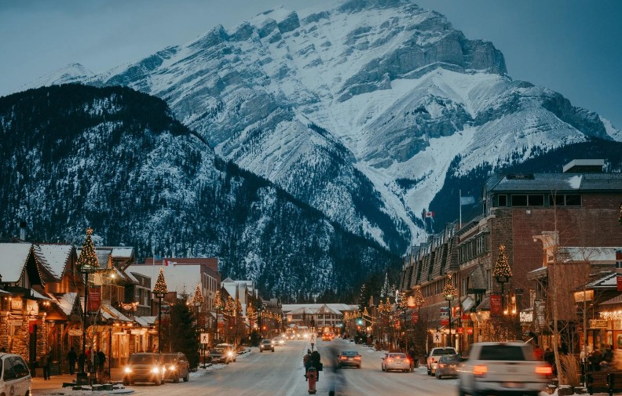
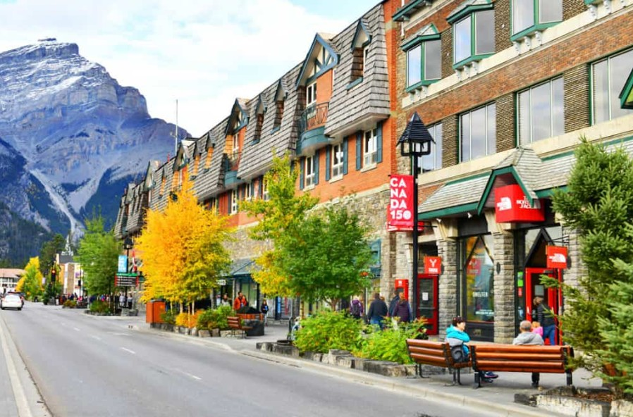

Banff
Un tesoro canadiense


Un tesoro canadiense
Banff es uno de los destinos más hermosos de Canadá, famoso por sus montañas cubiertas de nieve, lagos de color turquesa y paisajes que parecen sacados de un sueño. Es el lugar perfecto para conectarse con la naturaleza.

Ubicado en el Parque Nacional Banff, este destino ofrece actividades como senderismo, esquí y paseos en kayak. Cada rincón es una oportunidad para vivir una aventura inolvidable rodeado de paisajes espectaculares.
En invierno, Banff se transforma en un mundo blanco ideal para el esquí, mientras que en verano sus lagos y bosques cobran vida con colores vibrantes. Sin importar la época, siempre tiene algo especial que ofrecer.
Conoce más sobre BanffBanff es el parque nacional más antiguo de Canadá y uno de losm ás visitados del mundo. Sus famosos lagos, como Lake Louise, obtienen su color turquesa gracias a pequeños fragmentos de roca llamados "harina glaciar".
| Lugar | Ubicación | Características |
|---|---|---|
| Lake Louise | Alberta | Lago Turquesa |
| Moraine Lake | Valle de los Diez Picos | Paisaje Montañoso |
| Parque Nacional Banff | Canadá | Reserva natural |
Banff es un parque nacional lleno de paisajes increíbles, lugares vibrantes y montañas de ensueño.
Explora sus maravillas naturales su historia y todo lo que lo hace único.

